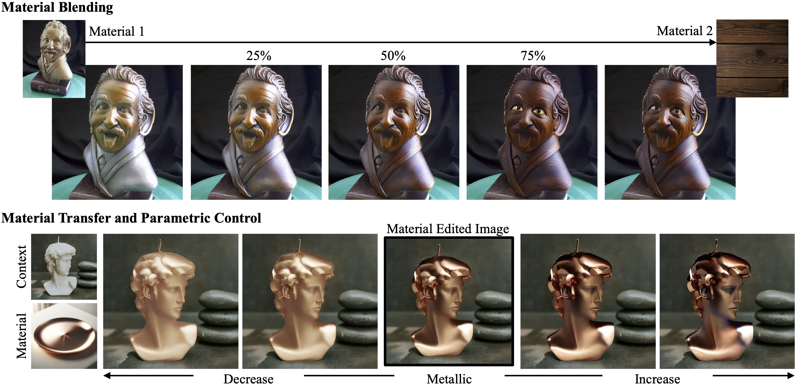

Control materials using pretrained generative models by just changing the CLIP embeddings!


Editing materials of objects in images based on exemplar images is an active area of research in computer vision and graphics. We propose MARBLE, a method for performing material blending and recomposing fine-grained material properties by finding material embeddings in CLIP-space and using that to control pre-trained text-to-image models. We improve exemplar-based material editing by finding a block in the denoising UNet responsible for material attribution. Given two material exemplar-images, we find directions in the CLIP-space for blending the materials. Further, we can achieve parametric control over fine-grained material attributes such as roughness, metallic, transparency, and glow using a shallow network to predict the direction for the desired material attribute change. We perform qualitative and quantitative analysis to demonstrate the efficacy of our proposed method. We also present the ability of our method to perform multiple edits in a single forward pass and applicability to painting.
Given a context image, MARBLE can reconstuct an image while tuning material properties such as roughness,
metallic, transparency and glow. This parametric control can also be combined with a new material exemplar
applied onto the object within the context.

Given a context image, MARBLE can reconstuct an image while tuning material properties such as roughness, metallic, transparency and glow. This parametric control can also be combined with a new material exemplar applied onto the object within the context.
Since MARBLE does not require fine-tuning on the diffusion model nor the text encoder, it preserves much of the generative capabilities which allows the material controls to be applied to various styles of arts.
@article{cheng2024marble,
title={MARBLE: Material Recomposition and Blending in CLIP-Space},
author={Cheng, Ta-Ying and Sharma, Prafull and Boss, Mark and Jampani, Varun},
journal={CVPR},
year={2025}
}